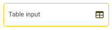

Codificando en Pyplan
Contents
Codificando en Pyplan#
Uno de los aspectos distintivos de Pyplan es la forma en que el código es organizado a través de un diagrama de influencia jerárquico, donde cada nodo representa alguna etapa en la carga o procesamiento de la información.

Los nodos son los repositorios de porciones de código que puede ser introducido de forma directa por el usuario o generado automáticamente por un asistente de Pyplan al parametrizar o manipular interfaces desarrolladas para este fin.
El diagrama se construye arrastrando los diferentes tipos de nodo sobre la hoja del diagrama. La ventana de nodos se despliega haciendo click sobre este icono que aparece en el extremo superior izquierdo del diagrama.
{kind=link}
Las flechas que indican la relación entre nodos son generadas automáticamente al referenciar una variable como fuente de datos de entrada de un proceso subsiguiente.
Los nodos tienen diferentes colores que ayudan a entender la función que cumplen dentro del diagrama.
No-code#
Pyplan es una plataforma pensada para que usuarios sin conocimientos de programación puedan construir y compartir aplicaciones de Data Analytics y Planning.
La construcción de una aplicación requiere como primer paso la entrada de datos, la cual puede ser manual o a través de la lectura de una fuente de datos externa.
Entrada de Datos Manuales#
La entrada de datos manuales se construye arrastrando un nodo del tipo: 
Este tipo de nodo, una vez definido un título, abre un asistente que permite definir que tipo de dato manual se pretende ingresar.

Asistente de entrada de datos manuales#
Entrada de un Escalar#
Es la entrada utilizada para ingresar un parámetro único. Una vez definido el título del nodo se representa asi en el diagrama: 
Entrada de un Selector#
Se utiliza para ingresar las diferentes alternativas de elección que se presentarán en un selector desplegable. Una vez creado aparece asi dentro del diagrama: 
Entrada de una Tabla#
Se utiliza para ingresar multiples parámetros que son organizados en una estructura de tabla, donde cada columna representa un atributo y en cada fila se ingresa un registro. Luego de ingresar un título al nodo, se abre un asistente que permite definir los campos que constituirán la tabla de datos y el tipo de datos que sera ingresado.

Una vez creado aparecerá asi en el diagrama: 
Seleccionando el nodo tabla, y luego haciendo doble-click sobre el mismo se abre la tabla a pantalla completa para ingresar datos.
Almacenamiento de Tablas
Los datos aquí cargados son almacenados en un objeto denominado Pandas Dataframe Pyplan interpreta este tipo de objetos de forma nativa, permitiendo su manipulación y visualización en forma de tabla y gráfico.
Entrada de un Formulario#
El formulario es la herramienta mas potente y versátil de entrada de datos manuales ya que permite combinar columnas de entrada de datos junto con columnas calculadas que sirven de referencia o guía para el dato que esta siendo ingresado. Por ejemplo si estamos creando una herramienta para ingresar datos de un presupuesto de ventas, puede ser de ayuda para quien irá a ingresar esos datos tener como referencia la ventas del año anterior. El formulario, a diferencia de la Tabla, es almacenado un una base de datos, permitiendo por lo tanto que multiples usuarios ingresen datos de forma simultanea.
Al arrastrar un nodo de entrada de datos, y luego de haber elegido Formulario como elemento de entrada se muestra el siguiente asistente para su creación:

Definiendo un titulo para cada campo de entrada, se genera una sugerencia de nombre de campo, luego el tipo de columna de acuerdo con las opciones que muestra el cuadro desplegable.
Adicionalmente el formulario permite definir los siguientes parametros:

Entrada de un Cubo#
Un cubo de datos es un objeto de entrada particular que permite el ingreso de un solo parámetro para todas las combinaciones de las dimensiones del cubo. Es por esto que para su definición es necesario indicar cuales son las dimensiones del cubo de datos de entrada. Su uso es indicado cuando se quiere enfatizar la entrada de datos en todos los elementos de las dimensiones de apertura.

Lectura de fuente de Datos#
Otra de las formas de ingreso de datos a Pyplan es a través de la conexión a fuentes de datos externas las cuales son leídas al momento de ejecutar el código correspondiente.
Para este fin se arrastra un nodo denominado  que nos desplegará, luego de definir su título, un cuadro de dialogo como el siguiente:
que nos desplegará, luego de definir su título, un cuadro de dialogo como el siguiente:

Las opciones de uso mas frecuente (csv, Excel) cuentan además con un asistente específico que permite configurar todos los parámetros de lectura.

Otras opciones de uso menos frecuente se inicializan con el código base que, luego de completar los parámetros necesarios, permiten la lectura de datos correspondiente.

Manipulación y Operaciones con Datos#
Una vez generadas las entradas de datos el siguiente paso es su análisis y procesamiento, para este fin se utilizan los nodos de tipo  .
Este tipo de nodo es el mas general de todos y permite alojar en su definición cualquier tipo de codificación.
Al arrastrar y soltar un nodo “Variable”, nos pedirá definir su título y luego obtendremos un nodo con una definición como la siguiente:
.
Este tipo de nodo es el mas general de todos y permite alojar en su definición cualquier tipo de codificación.
Al arrastrar y soltar un nodo “Variable”, nos pedirá definir su título y luego obtendremos un nodo con una definición como la siguiente:
result = 0
Para vincular este nuevo nodo con otro que sea su fuente de datos, podemos escribir el identificador (Id) del nodo en su definición o una vez posicionado donde queremos insertar la llamada a otro nodo, apretando la tecla <Alt> hacemos click sobre el nodo al que queremos vincularlo, esto traerá el Id de ese nodo a la definición.
Aceptando los cambios veremos que aparece una flecha que indica el vinculo entre nodos y el color del nodo variable cambia a “Gris” para indicar que ese proceso no tiene otra salida mas allá del propio nodo.

La variable “first variable” toma los datos del nodo “Data”#
El nodo de tipo Variable permite escribir código Python libremente en su definición. No obstante ello, Pyplan provee una serie de asistentes que ayudan a realizar operaciones de transformación de los datos a través del uso de interfaces preparadas para este fin.
Estos asistentes dependen de la estructura de datos con la que estemos trabajando (objeto), es por esto que necesitamos evaluar el nodo primero para que Pyplan pueda determinar los asistentes que nos presentará para trabajar.
Estos asistentes se identifican como “Wizards” y se despliegan una vez ejecutado el nodo, haciendo click en el icono indicado en la siguiente figura:

Al utilizar estos asistentes se podrá observar como el código de definición del nodo cambia con las instrucciones apropiadas para generar el proceso buscado. Este procedimiento, equivalente al grabado de Macros en una planilla de cálculo, permite al usuario que no conoce el lenguaje Python introducirse en sus funciones y sintaxis.
Indices#
Los indices o dimensiones, son la forma en que los datos son estructurados. Es decir son los encabezados de filas y columnas de una tabla que describen de que se trata el valor que vemos un su intersección. Ejemplos de indices son el listado de productos, regiones, periodos de tiempo, etc. Sirven para caracterizar a los datos o hechos que con los que se opera.
En Pyplan los indices se generan arrastrando un tipo de nodo específico para este fin identificado como .
{kind=link}
Luego de indicar un titulo para el Indice se despliega un asistente que permite definir los elementos del indice.
Lista#
Permite la entrada manual de los elementos del indice. También es posible copiarlos desde una tabla y pegarlos indicando su primera posición. El rango de datos se extenderá en caso de ser mayor al numero de elementos mostrados.

Range#
Permite generar el indice de forma automática a traves de al definición de los parámetros de un rango. Este rango puede ser de tipo texto, numero o fecha


Jerarquia de indices#
Los indices pueden ademas tener jerarquías, es decir niveles superiores de agregación. Por ejemplo la jerarquía natural de un indice País es Region o Continente, o la de un indice Mes es Trimestre, Semestre o Año.
La correspondencia entre un indice y su jerarquía superior se establece a través de una tabla donde se indica para cada elemento de la jerarquia inferior su correspondiente en la superior. La siguiente imagen ilustra el caso para un indice “Countries” y su jerarquia superior “Regions”

Haciendo click derecho sobre el indice de menor jerarquia, en sus propiedades se indica cual es la tabla que contiene la relacion de correspondencia con la jerarquia superior, siguiendo el ejemplo:

Todo indice que contiene una relacion jerarquica se identifica con un icono dentro del nodo como muestra la siguiente imagen en el nodo Countries
Organización del diagrama#
El diagrama o “workflow” es la forma en que el código se organiza en Pyplan. Una convención general para ayudar a la lectura, es mantener el sentido de las flechas / flujo de la información, de izquierda a derecha y de arriba hacia abajo. Ademas de los títulos para explicar de forma resumida el proceso o información alojada en un nodo, es posible incluir cuadros de texto que ayudan a interpretar un conjunto de nodos.

Como regla general es deseable no tener mas de 20 nodos en un diagrama. Toda vez que esto suceda se recomienda el uso de “Modulos” para agrupar nodos cuyo proceso comparten un fin especifico y por lo tanto pueden ser agrupados.
En el diagrama de arriba podríamos crear un modulo denominado “Outputs” (1) que agrupe los 3 nodos de salida. Y luego cortar (2) y pegar (3) los nodos de salida dentro del nuevo modulo.
Estos 3 pasos se describen en la siguiente imagen:

Coloración de Nodos#
Los nodos son coloreados de forma automática para facilitar la comprensión de su propósito y función.
Todos los nodos mantienen su color original, que es el desplegado en el menu desde donde se arrastran con excepción del nodo tipo Variable. Este nodo puede tomar tres colores de acuerdo a su función:
celeste: cuando forma parte de un proceso de cálculo en el diagrama que lo contiene
gris: cuando el nodo en cuestión no tiene salidas
rojo: cuando las salidas del nodo se encuentra fuera del modulo que lo contiene
Ejecución de nodos#
Un nodo puede tener dos estados: No Calculado o Calculado.
Al abrir una aplicación todos los nodos están pendientes de ejecución, hasta que algún comando lo indique. Al mandar a calcular un nodo (ejecutarlo), Pyplan recorre de forma recursiva todo el diagrama de influencia preguntando si los nodos que alimentan el nodo que se quiere ejecutar están calculados, sino es asi, va un paso hacia atrás en el proceso de calculo preguntando lo mismo.
Una vez llegada a la frontera de la aplicación o la frontera de nodos calculados comienza a calcular aguas abajo para poder finalmente presentar el resultado del nodo indagado.
Este proceso garantiza que el resultado de un nodo al ser calculado es siempre el mismo y no que su valor depende de la secuencia de ejecución de los nodos precedentes.
Por otro lado este mecanismo le provee mucha eficiencia de computo ya que al cambiarse alguna variable intermedia en el calculo garantiza que solo son recalculados aquellos nodos cuyo valor ha sido afectado por el cambio en la variable mencionada.
El estado Calculado / No calculado puede ser inspeccionado al seleccionar un nodo. En la vista de resultados nos mostrará la salida del nodo en caso de estar calculado y sino un mensaje indicando que el nodo no esta calculado.
Estructuras de datos soportadas#
Pyplan interpreta de forma nativa algunas estructuras de datos del tipo Tablas y Cubos proveniente de las librerías de Python mas difundidas (Pandas, Numpy, Xarray).
Las Tablas de datos son la estructura típica de una base de datos, con atributos definidos por columnas, donde cada fila corresponde a un registro.
Los Cubos de datos pueden tener cualquier numero de dimensiones. Estas dimensiones a su vez pueden estar nominadas o ser indefinidas.
Estructuras de datos mas utilizadas
Tablas de datos#
Una tabla se asemeja a una tabla en base de datos, es decir es una estructura de datos donde cada columna representa un atributo o medida y donde cada fila corresponde a un registro particular de esos atributos o medidas.

Las tablas de datos en Pyplan corresponden al objeto Dataframe de la librería Pandas, una de las librerías mas utilizadas en Data Science.
Algunas funcionalidades básicas de operaciones con Dataframes son las facilitadas por los asistentes de Pyplan.
Existen sin embargo muchas otras operaciones que pueden realizarse a traves de la codificación en Python utilizando la librería Pandas.
Introducción rápida a Pandas
Una guía rápida de introducción a las funcionalidades de Pandas puede consultarse aquí.
Operaciones asistidas con Tablas#
Un nodo que al ser evaluado devuelve como resultado una Tabla (DataFrame) presentará como asistentes las siguientes opciones:

Siguiendo con el ejemplo, si creamos una variable “first variable”, cambiamos su definición vinculándola al nodo data tal que:
result = data
luego de ejecutar este nodo para permitir que Pyplan identifique el objeto resultante, desplegamos los wizards y elegimos sort “by Year”

Veremos que el resultado es el ordenamiento por año de la tabla y su código final queda definido asi:

El usuario podría continuar interactuando con el objeto de datos y analizar los cambios que provoca en la definicion del nodo y de esa manera ir aprendiendo el lenguage Python.
Cubos de datos#
El cubo de datos es también un objeto nativamente soportado por Pyplan. El objeto utilizado es el DataArray de la librería XArray.
Un cubo de datos nominado es una estructura de datos que contiene un valores indexados por n-dimensiones identificadas.
Estas dimensiones en Pyplan se denominan Indices y se identifican con este tipo de nodo  en el diagrama.
en el diagrama.
Por ejemplo podríamos pensar en un cubo de datos de “Count of Win” indexado por las dimensiones [Tournament Country, Surface, Year]
Este cubo, siguiendo el ejemplo desarrollado hasta aquí sería:

Los cubos de datos se crean por transformación de tablas (Dataframes) en cubos de datos, por entradas directas (Input Table), o por operaciones entre cubos.
Creación de un Cubo a partir de una Tabla de datos#
Al hacer click con el botón derecho del mouse sobre un nodo que evaluado resulta en una tabla de datos se despliega el siguiente menu:

Haciendo click sobre la opción “Create Cube” se despliega el siguiente cuadro de dialogo:

En el se listan todas las columnas del dataframe, el tipo de datos, el indice (en caso de existir) que recogerá los valores de esa columna, la opción de crear un indice para el caso en que este no exista y por ultimo la función de agregación que se utilizará para agrupar el valor del hecho o variable a representar.
Para crear un cubo de datos en Pyplan es necesario que existan, de forma anticipada, las dimensiones (Index) que caracterizan ese cubo de datos. Es por esa razón que el asistente nos ofrece crear los indices basados en los datos de las columnas en caso que este no exista.
Operaciones con cubos de datos#
Al igual que con los objetos tipo Tabla, Pyplan provee asistentes para operar con Cubos de datos, que se despliegan automáticamente en el mismo lugar, cuando el objeto resultante es un Cubo de datos de tipo XArray.
Adicionalmente, a diferencia de las Tablas, los Cubos de datos permiten operaciones matemáticas entre ellos que dan como resultado nuevos Cubos. Es importante entender como funcionan estas operaciones entre cubos de datos para asi, poder construir el proceso de calculo deseado.
Operaciones entre un escalar y un cubo#
Al sumar, restar, multiplicar o cualquier otra operación matemática sobre un cubo de datos, la misma es ejecutada entre el escalar y cada elemento del cubo de datos.

Puede observarse en la siguiente imagen la definición del nodo que establece:
result = cube + scalar
El valor del escalar, 5 en este caso, es sumado a cada elemento del cubo original dando como resultado:

Operaciones entre dos cubos de iguales dimensiones#
En caso que los cubos tengan las mismas dimensiones, la operación indicada es ejecutada entre los elementos de las mismas celdas de ambos cubos

En este caso se observa como la primera celda del Cubo C es el resultado de la suma de la primera celda del Cubo A mas la primera celda del Cubo B.
Operaciones entre dos cubos de distintas dimensiones#
Cuando se operan con cubos de distintas dimensiones, la dimension faltante en uno de los cubos opera de forma escalar sobre el otro de los cubos. Un ejemplo permite explicar mejor esta forma de operar:

En el ejemplo de arriba se observa como el Cubo B, que no tiene la dimension Region, es utilizado de forma escalar respecto de esta dimension al operar con el Cubo A.
El listado completo de operaciones con Cubos puede consultarse en la documentación de la librería XArray.
Low-code#
Si bien a través de los asistentes es posible realizar una gran cantidad de operaciones, para tareas mas sofisticadas puede ser necesario alterar el código de los nodos. Para ello Pyplan incluye un completo editor de código accesible con las vistas Code+Result o Code+Preview.
Editor de Código#
Siguiendo con el ejemplo en desarrollo, al seleccionar el nodo “Calculate Wins and Double Faults %” como se muestra en la figura, y luego haciendo click en la vista Code+Result se observa un ejemplo de codificación:

En la definición del código (Ventana Code) puede verse como se crean dos columnas nuevas “win” y “dblfaults” a partir de la tabla de datos (Dataframe) original de acuerdo a las siguientes instrucciones:
# Assign dataframe to the variable '_df'.
_df = data
# Create new column that checks if Federer won.
_df['win'] = _df['winner'] == 'Roger Federer'
# Create new column that calculates the % of double faults in each match.
_df['dblfaults'] = _df['player1 double faults'] / _df['player1 total points total']
result = _df
El usuario puede experimentar alterar el código en la definición del nodo y visualizar el impacto en los resultados.
Ayudas a la codificación#
Tooltip#
Al desplegar el código de un nodo se puede observar que al momento de situar el cursor sobre alguna de las variables, esperando unos segundos se despliega una vista de previsualización o ayuda sobre la variable o función que esa siendo inspeccionada.

Intellisense#
IntelliSense es un auxiliar de finalización de código que incluye una serie de características: Lista de miembros, Información de parámetros, Información rápida y Palabra completa.
Estas características permiten obtener más información sobre el código que usa, realizar el seguimiento de los parámetros que escribe y agregar llamadas a propiedades y a métodos con tan solo presionar unas teclas.
Después de escribir un carácter desencadenador (por ejemplo, un punto .) , aparece una lista de los miembros válidos de un tipo (o espacio de nombres). Si sigue escribiendo caracteres, la lista se filtrará y solo incluirá los miembros que empiecen por esos caracteres o donde el principio de cualquier palabra del nombre empiece por esos caracteres.
IntelliSense también efectúa búsquedas de coincidencias “camel case”, por lo que puede escribir la primera letra de cada palabra con camel case del nombre del miembro para ver las coincidencias. Después de seleccionar un elemento, puede insertarlo en el código presionando la tecla TAB o insertando un espacio. Si selecciona un elemento y escribe un punto, el elemento aparece seguido del punto, con lo que se muestra otra lista de miembros. Cuando seleccione un elemento, obtendrá la información rápida del mismo antes de insertarlo.

Buscador de Código#
Pyplan cuenta con una base de conocimiento que puede ser consultada con preguntas en lenguaje natural (ingles) sobre como codificar. La pregunta se inserta como comentario, es decir precedida por el símbolo #. Una vez finalizada la pregunta se debe presionar Control y Espacio para lanzar la búsqueda. Los resultados a esas preguntas son listados para que el usuario pueda navegarlos y determinar si alguno puede resultarle util para el caso que este intentando resolver.

Consola de errores#
Cuando se produce un error en la ejecución del código el mismo es indicado con un signo de advertencia (A) como lo indica la siguiente imagen, Al hacer click en este indicador se despliega la consola de error en la parte inferior. Además es subrayado en rojo dentro del código la línea con error (B). También es marcado el nodo que contiene el error (C).